Helper rays: tracing any ray through a lens
The three textbook rays (parallel, through F, through the centre) only cover rays that happen to obey a rule. To trace any ray through a thin lens, use a helper ray: a dashed construction line that never forms images.
The idea: rays that are parallel before a lens meet at one point in its back focal plane. The ray through the centre goes straight on, so it shows you where that point is.
- Draw the ray to the lens. Here ray r₁ leaves a point source and reaches lens L1
at an arbitrary height. Where does it go next? Turn on Show focal planes in the lens's
panel so you can see them.
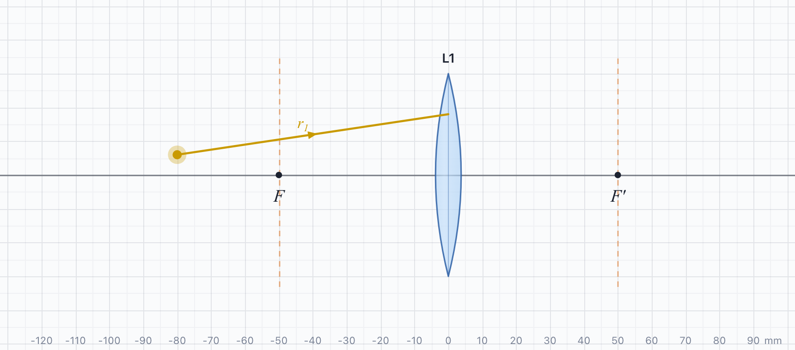
- Draw a helper ray. Pick Helper ray from the corner of the Ray tool (or press
H; R goes back to ordinary rays). Start it at the lens centre and move
until it snaps parallel to that ray: r₁ glows while the snap
holds. Carry it past the back focal plane.
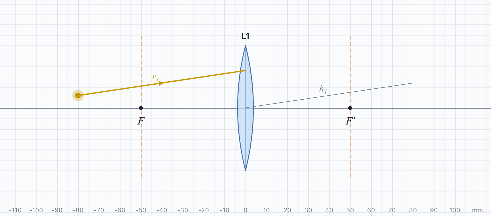
- Send the real ray through the crossing. Click r₁'s end to continue it. Aim at the
point where the helper crosses the back focal plane: it snaps
through that ray at the back focal plane of L1 (the plane is shown).

- Check with a second ray. Add the central ray r₂ from the same source. Where r₁ and
r₂ cross, RayMan marks the image, exactly where the lens equation puts it.
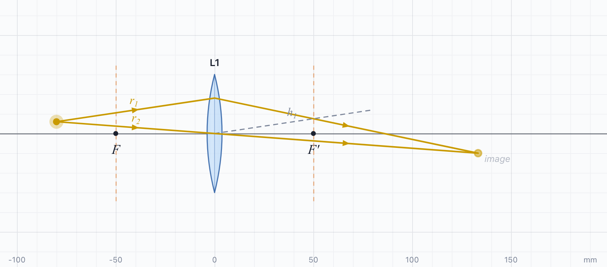
Names on rays. Select a ray and press N to give it a name such as r1 or h2; a number at the end is drawn as a subscript. Enter keeps it, Esc leaves it as it was, and an empty name removes it.
Snap tiers. Snaps with optical meaning (F, F′, centres, images, straight on, parallel to the axis) win over points on other rays and "parallel to that ray". Hold Alt to draw freely.
Light from infinity: tilted bundles and foci
A ray that starts at a free point (not on an object or source) is treated as light from a point at infinity. Rays drawn parallel to the axis all come from the same point at infinity, and so do rays drawn parallel to that ray. Where such rays cross after a lens, RayMan marks a focus. Unlike an image, a focus does not stop the rays, because in a relay the beam carries on to the next lens.

Leaving a lens, a ray can also snap bent by L1: the way an ideal thin lens bends it. Use it when no classic rule applies. It stays right when anything moves.
4f relays and scanning
A 4f relay
Drag lens 2 along the axis until its F snaps onto F′ of lens 1; the label shows F′₁ = F₂. A parallel beam in comes out parallel, wider or narrower by f₂/f₁.
The scan mirror
A scan mirror (tool M) is drawn unfolded, so the optical axis stays straight: light passes through it, from either side, and comes out turned by its beam tilt. (A real mirror tilted by α turns a beam by 2α; the panel sets the beam's angle directly.)
- Place the mirror, then drag the scan lens until its F snaps onto the mirror. Add the tube lens as a 4f relay after it.
- Place a collimated beam (tool C) in front of the mirror. Its three rays go through the mirror, tilted, to the scan lens. (Rays you draw to the mirror carry on through it in the same click.)
- Continue each beam ray by hand through the lenses: bent by scan, then bent by tube.
- Select the mirror and press Scan: the tilt sweeps back and forth by the scan range, and everything after the mirror follows.
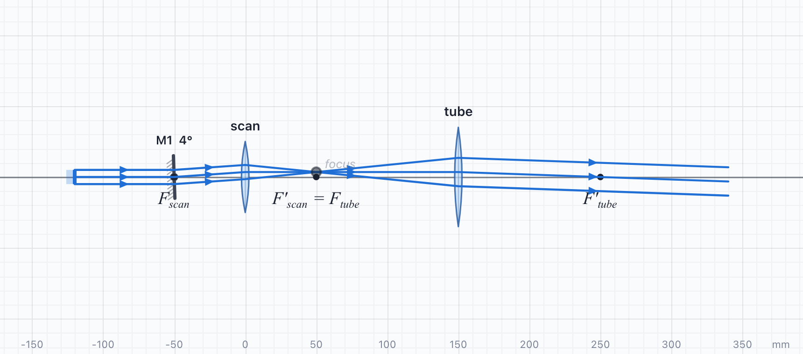
Showing the whole scan in one picture
Tick Show the scan extremes in the mirror's panel. The light the mirror steers is drawn again, faintly, at both ends of the scan (rest tilt ± range). This is useful for a still picture or a handout; while Scan runs the extremes stay put.
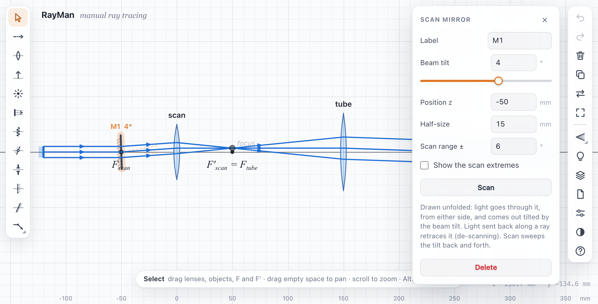
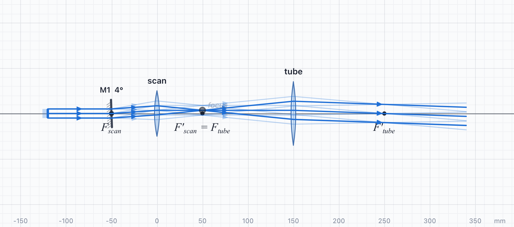
Families of conjugate planes
Image plane markers (tool S) can be coloured in their panel. Use one colour for the planes where the beam focuses and moves (sample, intermediate image) and another for the planes where it pivots and stays put (the mirror, the objective's back focal plane).
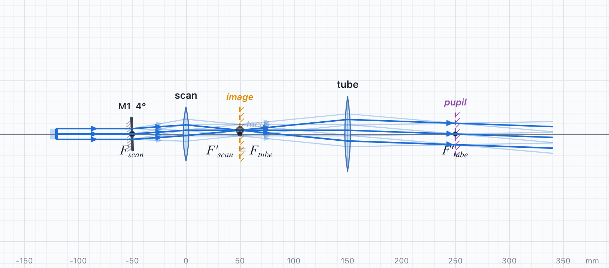
Why the relay is needed: lens rims
By default a ray that misses a lens simply carries on past it. Turn on Lens rims stop light in Settings and light that misses a lens or mirror is stopped at its rim, marked ×. With a mirror some way behind a small objective, the scanned beam walks off the back aperture and light is lost at the edges of the scan:
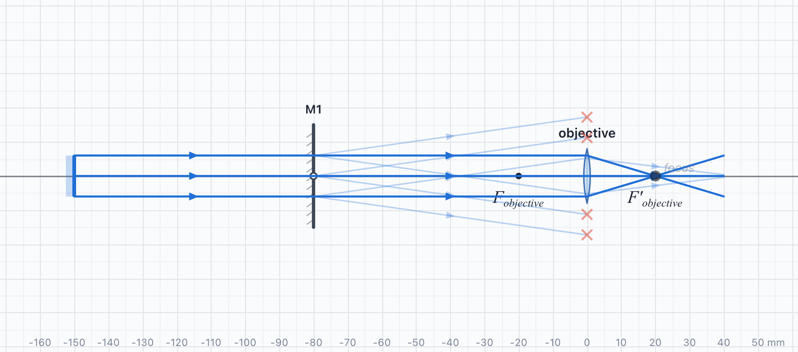
Building a confocal
The de-scanned confocal: the laser runs right to left through the scan mirror to the sample, and the fluorescence comes back left to right through the same mirror, which undoes the scan.
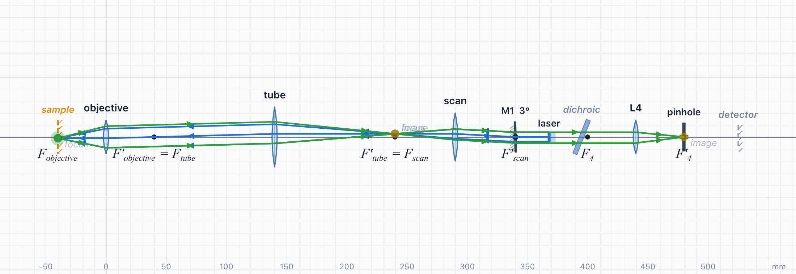
- The optics. From the left: a sample plane marker, the objective, the tube lens (its F on F′ of the objective), the scan lens (its F on F′ of the tube lens), the scan mirror (on F of the scan lens), a dichroic (tool D), a lens and an iris for the pinhole, and a detector plane marker.
- The laser. Place a collimated beam between the mirror and the dichroic, colour it blue, select it and press ⇧R: it turns round and runs right to left, through the mirror to the scan lens. Continue its rays by hand to the sample (bent by scan, bent by tube, bent by objective, ending on the sample plane).
- The fluorophore. Put a point source where the laser focuses, and colour it green. Clicking there with the Ray tool starts a ray from the point source. (Shift-click continues a laser ray that ends there instead.)
- Its light. Draw green rays from the fluorophore to the objective and back up through each lens. At the mirror they pass through and are de-scanned: they leave on the line the laser came in on, whatever the tilt. Carry on through the dichroic to the pinhole lens and the pinhole.
- The dichroic. In its panel, set Stops to the laser's colour: blue light that reaches it ends there; green passes. (In a real microscope the dichroic reflects one of the two to the side. Unfolded, it just stops the colour that should not go on.)
Draw at a non-zero tilt. RayMan never pins light that comes through a scan mirror to points it only passes at one tilt, so a beam traced at 0° stays right when you scan. Even so, tracing at a small tilt (3° here) makes it easier to see what each ray is doing.
Why the fluorophore does not move with the scan. A point source stays where you put it. To show de-scanning at another tilt, change the tilt and drag the fluorophore to the new focus: its light still leaves the mirror on the laser's line.
The two families of planes
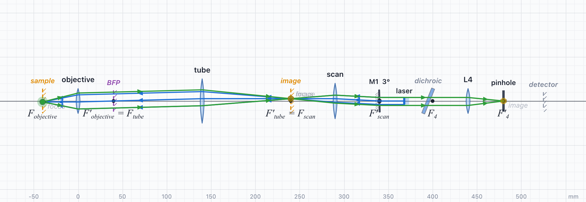
The pinhole blocks out-of-focus light
Add a second point source a little way from the focus (a "bead"), and draw its light the same way. In-focus light converges on the pinhole and gets through; the bead's light reaches the pinhole spread out and is stopped by the blades. Open and close the iris to watch it.
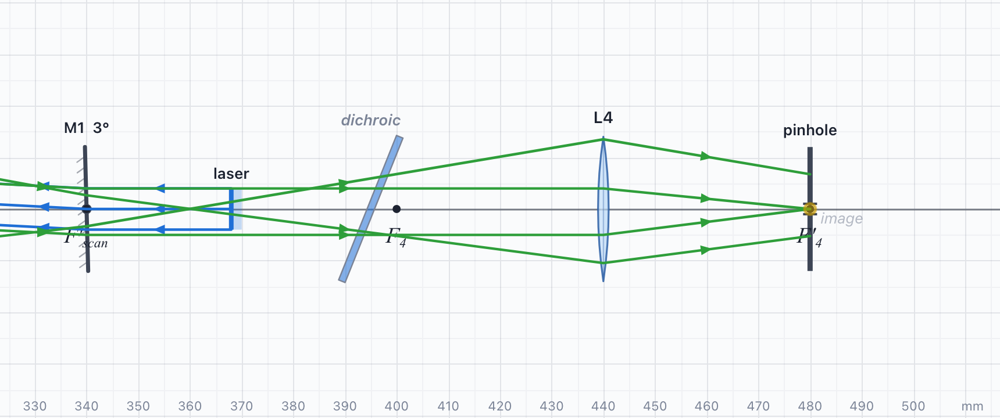
Irises and fill-in rays
An iris (tool I) stops any ray that meets its blades. Close it and rays that went through are clipped; open it and they come back. Drag the edges of its opening on the canvas, or use the slider in its panel. Its centre and the edges of its opening are points to aim through (chief and marginal rays). Irises line up with focal points and images as you drag them: an aperture stop in a back focal plane, a field stop in an image plane.
The fill-in button (B; its corner sets how many) adds faint rays between the two outermost rays of each bundle. They are interpolated from the rays you drew, so wrong rays give a wrong fill. Irises clip the fill-in rays too.

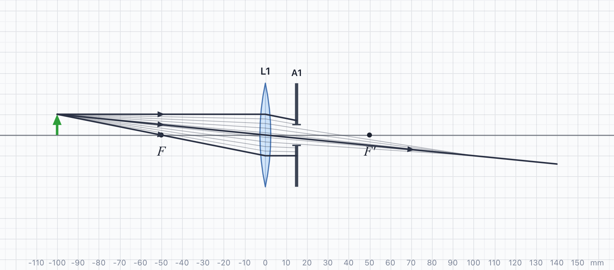
For a worked example, open the Köhler illumination files in examples/kohler/
(File → Open): collector, condenser, field and aperture diaphragms, objective and camera, built
step by step.
Keeping a diagram readable
A full confocal soon has a dozen rays. The Objects panel (layers icon on the right, or E) lists each optical axis's light sources with an eye switch. Switching a source off takes it off the bench together with its rays, rays from its images, and anything drawn from those (helper rays too). Switch it on again and everything comes back as it was. Helper rays have their own switch. Click the name of an optic to select it.